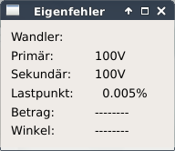
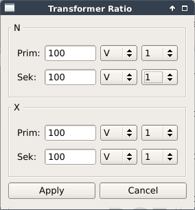
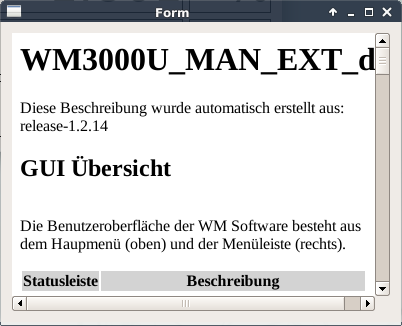

Diese Beschreibung wurde automatisch erstellt aus: release-1.2.22
Die Benutzeroberfläche der WM Software besteht aus dem Haupmenü (oben) und der Menüleiste (rechts).
| Statusleiste | Beschreibung |
|---|---|
| EFT | Name der Eingefehlertabelle oder Keine |
| MED | Name Ergebnisdatei oder Keine |
| ChN | Messbereich N-Kanal |
| ChX | Messbereich X-Kanal |
| Status | Status der Messung gestartet or gestopt |
| Meldungen | z.B.: Simulation, justiert, nicht justiert, Signalfrequenz, Kein PPS |
| IP: | Aktuelle IP Adresse (LAN Anschluss) |
| Menüleiste | Beschreibung |
|---|---|
|
|
Starte WM Software |
|
|
Öffne Datei Browser |
|
|
Systemeinstellungen |
|
|
Netzwerk |
|
|
Zera Update |
|
|
Uhr |

| Bezeichnung | Funktionen |
|---|---|
| Eigenfehlertabelle |
Ist bereits eine Tabelle geöffnet, springt das Menü direkt in die Eigenfehlertabelle, die sie dann weiter bearbeiten können. Möchten Sie eine neue Tabelle anlegen und es ist noch keine Datei geöffnet, öffnet sich ein Fenster, in dem Sie sowohl den Speicherort als auch den Dateinamen auswählen können. Der Default-Name ist transformer.oet, ändern Sie den Name wie benötigt ab und klicken Sie auf Save. Es öffnet sich eine Beispieldatei mit vorgegebenen Daten, die Sie entsprechend überschreiben können. Wenn Sie die Datei schließen, obwohl Sie sie noch nicht abgespeichert haben, öffnet sich automatisch ein Fenster, das Sie zum Speichern der Datei auffordert. Wählen Sie hier nun entweder einen neuen Namen für die Datei oder speichern es unter dem bisherigen Namen ab. |
| Ergebnisdatei |
|
| Beenden | Zum Beenden der Software |
Eigenfehlertabelle Eigenfehlertabellen werden im System gespeichert und beinhalten bekannte Fehler verwendeter Normalwandler. Im Anhang finden Sie eine Beschreibung des Aufbaus einer solchen Datei. Beim Öffnen einer Eigenfehlerdatei analysiert die Wandlermesseinrichtung alle Einträge dieser Datei und bildet sich für jedes gefundene Wandlerverhältnis Korrekturkurven, in dem es zwischen den gefundenen Korrekturpunkten linear interpoliert. Die ermittelten Korrekturwerte werden zur Kompensation verwendet, wenn dies im Konfigurationsmenü unter Berechnung aktiviert worden ist. Aktuell verwendete Korrekturwerte können in der Eigenfehleranzeige sichtbar gemacht werden.
Messergebnisse Messergebnisse können in Ergebnisdateien gespeichert werden. Dies geschieht über die Funktionstaste F6 bzw. über das Hauptmenü „Messung / Speichern Messwerte F6“. Hierzu muss eine Ergebnisdatei geöffnet werden. Ergebnisse werden als XML Dateien gespeichert. Das Format dieser Datei entnehmen Sie bitte dem Anhang.

| Bezeichnung | Funktionen |
|---|---|
| Speichern Sitzung | Speichern der aktuellen Sitzung |
| Laden Sitzung | Laden einer bereits gespeicherten Sitzung |
| Stop | Stoppen einer laufenden Messung |
| Speichern Messwerte | Speichern der aktuell angezeigten Messwerte |
| Simulation | Umschalten zwischen Simulation und realer Messung |
Eine Sitzung ist gekennzeichnet durch alle Einstellungen im Konfigurationsmenu und alle unter „Anzeige“ wählbaren Fenster. Beim Verlassen der Software werden alle diese „Sitzungsdaten“ default gespeichert und beim nächsten Start wieder gesetzt. Der Benutzer hat darüber hinaus die Möglichkeit, diese Einstellungen unter einem Namen zu speichern und durch „Laden“ der Sitzung zu reaktivieren.
Im Ansicht Menü könne die verschiedenen anderen Fenster geöffnet und geschlossen werden.
Fehlerwerte
Die Fehlerwerteanzeige stellt den aktuellen Lastpunkt, den Fehler und den Fehlerwinkel dar.
Durch Doppelklicken öffnet sich ein Kontextmenu mit dem sich die Anzeige konfigurieren lässt.
Sie können für jeden Anzeigewert die Feldbreite, die
Auflösung und unterschiedliche Einheiten wählen. Die Messeinrichtung bestimmt die Fehler nach IEC und ANSI.
Welcher Wert zur Anzeige kommt, wird ebenfalls im Kontextmenu eingestellt. Bei ANSI Fehler wird der
Winkelwert „inaktiv“ dargestellt.
* Der Lastpunkt kann relativ zum Gesamt-RMS-Wert des N-Kanals oder zum RMS-Wert der Grundschwingung dargestellt werden.
Vektoren
Die Vektoranzeige stellt die „rohen“ Vektoren der Primärseite der Prüflinge dar. Es handelt sich hierbei um die
Amplituden der Grundschwingung und den Phasenwinkel relativ zum Abtastfenster. Es erfolgt die Darstellung der
Werte aus der aktuellen Messperiode.
Durch Klicken der rechten Maustaste im Vektorfenster öffnet sich ein Kontextmenü. Sie haben hier die
Möglichkeit, die Amplitude bzw. den RMS-Wert des Vektors auszuwählen und die Winkelanzeige in die
mathematisch bzw. technisch positive Drehrichtung zu konfigurieren.
Eigenfehler
Die Eigenfehleranzeige zeigt an, welche Eigenfehlertabelle geladen wurde und welches Wandlerverhältnis aktuell
eingestellt ist. Ist „Eigenfehlerkorrektur“ aktiviert und existieren gültige Korrekturdaten werden die aktuell
benutzten Korrekturwerte in „Betrag“ und „Winkel“ ausgewiesen.
Dialog
Die Anzeige des Dialoges zwischen WM3000-Applikation und der im Hintergrund arbeitenden Server sollte
prinzipiell ausgeschaltet bleiben, da sie sehr große Ressourcen bindet. Sie sollte nur zur Fehlereingrenzung
herangezogen werden, für den Fall dass irgendwelche Probleme zwischen Client und Servern auftreten.
EN61850
Der EN61850-Monitor zeigt die Anzahl der eingelaufenen Datenbytes und die Anzahl der Synchronisations-
verluste seit dem letzten Starten der WM3000-Applikation an. Zusätzlich werden die Fehler, welche zu den Sync.
verlusten geführt haben angezeigt. Wir unterscheiden zwei Kategorien von Fehlern. Die eine sind Fehler, die der
MAC (Media Access Controller) selbst registriert hat, die andere sind Fehler, welche bei der Dekodierung der
Layer2 Protokolle aufgetreten sind. Fehler lassen sich durch Betätigen des Reset-Buttons zurücksetzen.
Fehleranzeige der WM mit:
Messswert Formatsteuerung
Dient der Einstellung der Fehleranzeige
Wird angezeigt nach Doppelklick
Vektoranzeige der WM mit:
Zeigt die Istwerte an
Vektoren Formatsteuerung
Dient der Einstellung der Vektoranzeige
Wird angezeigt nach Doppelklick

Eigenfehler des Normalwandlers wenn eine .oet Datei gesetzt ist
Zeigt die Fehler an die während der Messung aufgetreten sind
Die Fehler könne mit dem Reset Button gelöscht werden
| Bezeichnung | Funktionen |
|---|---|
| Konfiguration | Öffnet das Einstellungsmenü |
| Bereiche | Öffnet das Messbereichesmenü |
| Teiler | Öffnet das Teilermenü |
Wählen Sie im Menü Modus die Art des Wandlers.
| Auswahl | Beschreibung |
|---|---|
| Messung | Wählen Sie Un/Ux (konventioneller Wandler), Un/EVT (elektronischer Wandler bzw. LPVT) oder Un/nConvent (nicht konventioneller, digitaler Wandler). |
| Signal | AC oder DC (Option) |
Wählen Sie im Menü Berechnung den Phasenfehler des Prüflings und aktivieren oder deaktivieren Sie die Korrektur des Normwandlers.
| Auswahl | Beschreibung |
|---|---|
| Phasenfehler Prüfling | Geben Sie mittels externer Tastatur die Phasenlage des Prüflings in ° und die Totzeit in ms. |
| Korrektur Normwandler | Aktivieren bzw. deaktivieren Sie die Korrektur des Normwandlers. |
Wenn der zu messende Prüfling systemimmanente Phasendrehungen und/oder Totzeiten besitzt, können diese Werte hier eingetragen werden. Totzeiten werden frequenzabhängig in Phasenkorrekturen umgerechnet.
Wählen Sie im Menü Messung die Signalfrequenz, das Messintervall, die Abtastungen und die Integrationszeit.
| Auswahl | Beschreibung |
|---|---|
| Signalfrequenz | Wählen Sie zwischen 16.66 Hz, 50 Hz oder 60 Hz. |
| Messintervall | Einstellen der Perioden mittels Pfeilen. |
| Abtastungen | Wählen Sie zwischen 80 oder 256 Abtastungen pro Periode. |
| Integrationszeit | Einstellen der Zeit in Sekunden mittels Pfeilen. |
Signalfrequenz
Die Signalfrequenz definiert die Nominalfrequenz der Prüfgrößen. Die tatsächliche Frequenz der Prüfgrößen darf
hiervon bis zu ±1% abweichen. Die Abtastfrequenz des Messsystems ist das Produkt aus eingestellter
Nominalfrequenz und Samplerate. 50 Hz Nominalfrequenz und 80 Abtastungen/Periode ergeben demnach
4000 Hz Abtastfrequenz.
Messintervall
Bei Messintervall definieren Sie, wie viele Signalperioden zu einer Messperiode zusammengefasst werden.
Beispiel: Sie haben 256 Samples/Periode gewählt und 16 Perioden als Messintervall
Es werden 16 x 256 = 4096 Samples aufgenommen und ausgewertet.
Abtastungen
Bei den Abtastraten kann zwischen 80 und 256 gewählt werden. Dies sind, die bei Merging units üblicher Weise
genutzten Werte.
Integrationszeit
Es werden so viele Messperioden in Folge verarbeitet und gefiltert bis die eingestellte Integrationszeit
abgelaufen ist. Eine dann noch laufende, d.h. noch nicht abgeschlossene Messperiode wird nicht berücksichtigt
und wird für den nächsten Integrationszeitraum verwendet.
Wählen Sie im Menü Synchronisation das PPS-Signal.
| Auswahl | Beschreibung |
|---|---|
| Extern | Synchronisation erfolgt über ein externes Signal. |
| Intern | Die Synchronisation erfolgt über ein internes Signal. Geben Sie die Synchronisationszeit TSync in ms an. |
Die Synchronisation der Abtastung kann durch ein intern erzeugtes Signal oder durch ein externes Signal erfolgen. Synchronisation heißt in diesem Zusammenhang, dass das Abtastsystem zurückgesetzt wird und alle Samples für die Messperiode neu aufgenommen werden. Das intern generierte Sync-Signal lässt sich mit 100 ms Auflösung zwischen 0,5 und 2,5 Sekunden einstellen. Es steht an den Sync-Ausgängen zur Verfügung. Extern angelegte Sync-Signale stehen ebenfalls an den freien Ausgängen zur Verfügung. Desweiteren ist ein Ausgang mit einer 1000-fach höheren Frequenz des Sync-Signales vorhanden.
Strenge Synchronisation bedeutet, dass das Messsystem die Synchronität der Daten einer angeschlossenen Merging Unit überwacht und es zu keiner „gültigen“ Messperiode kommt, wenn die Samples nicht zu dieser Messperiode passen. Das System läuft dann in ein Timeout, was zu einer Fehlermeldung führt. Im Detail: Nach einem PPS-Impuls muss die Nummerierung der Samples mit 0 starten. Sind beispielsweise eine Messperiode aus 16 Signalperioden à 80 Samples eingestellt (also 1280 Samples), gehören die Samples mit den Nummern 0 ... 1279 zur 1. Messperiode, die Samples 1280 ... 2559 zur 2. Messperiode usw. Abweichungen hiervon werden als Fehler interpretiert und es kommt zum Timeout.
| Auswahl | Beschreibung |
|---|---|
| NPrim | Normalwandler Primärspannung |
| NSek | Normalwandler Sekundärspannung |
| XPrim | Prüfung Primärspannung |
| XSek | Prüfung Sekundärspannung |
| EVTPrim | Prüfung Primärspannung |
| EVTSek | Prüfung Sekundärspannung |
Wenn Sie eine Eigenfehlertabelle geöffnet haben, werden bei der Eingabe des Teilerverhältnisses für den Normwandler Comboboxen mit den gefundenen Primär- und Sekundärstufen angeboten. Ansonsten können Sie Werte mit/ohne Einheiten eingeben. „Keine Einheit“ wird als Volt interpretiert. Sie können aber auch mV oder kV angeben. Die Messeinrichtung rechnet die Werte intern um.
Wählen Sie im Menü nConvent die Mac-Adresse, Priority tagged, Ethertype header und Data set.
| Auswahl | Beschreibung |
|---|---|
| SMac-Adresse | Geben Sie über die externe Tastatur die MAC-Adresse für die Merging unit und die WM3000 ein. |
| Priority tagged | User priority – definiert die Frame Priorität Priority tagged CFI- cananonical format indicator (TPID) Tag protocol ID fix 0x8100 VID- VLAN ID (Virtual LAN identification) |
| Ethertype header | Ethertype is fix 0x88BA APPID (Application ID) |
| Data set | ASDU application set data unit Set data set within ASDU |
Geben Sie die MAC Adressen ein, um einen Verbindungsaufbau zwischen WM3000 und angeschlossener Merging unit zu ermöglichen.
Der Wert 0x8100 für TPID weist den Frame als IEEE802.1Q Frame aus. Der EtherType 0x88BA weist den Frame als Layer 2 Frame gemäß IEC61850 aus. User priority, CFI und APPID entnehmen Sie bitte der Konfiguration der angeschlossenen Merging unit. In ASDU stellen Sie ein in welcher Data Unit die Daten des zu messenden Wandlers übertragen werden. Mit Set wählen Sie einen von acht möglichen Werten aus.Wählen Sie im Menü Log die Logfile-Größe in kB über die Pfeiltasten.
Das Logfile ist als Fifo (first in, first out) realisiert. Sie können hier die Größe dieses Fifos zwischen 1 und 64 KB einstellen.
Das hexadezimale Keyboard wird angezeigt wenn eine hexadezimal Eingabe erforderlich ist.
Das Gleitkomma Keyboard wird angezeigt wenn eine Gleitkomma Eingabe erforderlich ist.
Messbereiche lassen sich hier manuell einstellen oder auf Automatik setzen (empfohlen)
Wie in der Konfiguration, können Sie das Teilerverhältnis hier einstellen. Die Werte werden mit Übernehmen gesetzt.

| Menü | Beschreibung |
|---|---|
| Info | Info über die Wandlermesseinrichtung |
| Info über ZERA | Info über ZERA GmbH |
| Info über Qt | Info über Qt |
| Version | Öffnet ein Fenster mit Informationen über:
|
| Release Info | Versionsauflistung aller ZERA Softwarekomponenten |
| Selbsttest | Führt einen Selbsttest durch. |
Die Versionen der WM werden angezeigt

Im Menü Sprache haben Sie die Möglichkeit die Sprache zu wählen.
Die Texte für die jeweilige Sprache werden beim Starten geladen. Wenn Sie also die Sprache wechseln wollen, startet das Programm neu.
Messergebnisse können in einer Ergebnisdatei gespeichert werden. Die Ablage erfolgt im XML-Format.
Beispiel:
Im Kopf der XML-Datei steht einmalig
Eigenfehlertabellen beschreiben einen bekannten Fehler des verwendeten Normawandlers.
Die bekannten Werte sind durch Semikolon getrennt in die Datei eingetragen.
Beispiel:
2000V;100V;100%;0.001%;0.005°
Die Werte werden in folgender Reiehnfolge erwartet:| Bezeichnung | Wert | Einheit |
|---|---|---|
| Primärstufe | z.B.: 2000V | m,k,M V oder A /3,/w3 |
| Sekundärstufe | z.B.: 100V | m,k,M V oder A /3,/w3 |
| Lastpunkt | z.B.: 100% | % |
| Amplitudenfehler | z.B.: 0.001% | % |
| Winkelfehler | z.B.: 0.005° | °,', rad, crad, µrad |